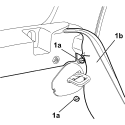
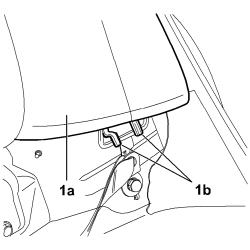
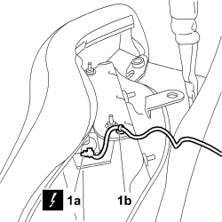
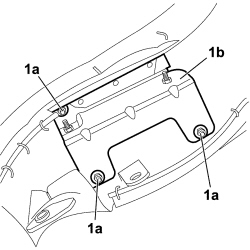

7050A47 SIDE PANEL ONE OF REAR SEAT SQUAB LH OR RH R R
- Path
- Procedures > 70 FITTINGS > 7050 REAR SEATS > 7050A REAR SEAT ASSEMBLY > 7050A47 SIDE PANEL ONE OF REAR SEAT SQUAB LH OR RH R R
- Kind
- repair procedure (removal / refitting; the operation number is the code)
- Applies to
- all engines; all production periods
- Interactive page
- https://sloeber94.github.io/elrnDB-fCrm/en/#/194001150
Applies to: all engines; all production periods
 Removing
Removing
 Refitting
Refitting- Turn the ignition key to the OFF position and extract it.
- Disconnect the negative and positive battery terminals and insulate them.
- Wait for 10 minutes before continuing.
Description | Connector | |
|---|---|---|
BATTERY |
- Open the tailgate.
Op. 7040B26 LOAD PLATFORM COVER BLIND - R+R
Op. 7040B42 PROTECTION GRILLE FOR ANIMAL TRANSPORT - R and R
Op. 7050A20 ONE-PIECE REAR SEAT CUSHION - R.R.
- Rotate the rear seat backrest.
1. Undo the fixing bolts (1a) from the rear seat side panel (1b).

Applies to: all engines; all production periods
1. Move the seat belt aside and carefully rotate the rear seat side panel (1a) releasing it from the attachments (1b).

Applies to: all engines; all production periods
1. Disconnect the electrical connection (1a) from the Side Bag module, release the drive cable from the special mounting clip (1b) and remove the rear seat side panel.
Description | Connector | |
|---|---|---|
1 | DRIVER'S REAR AIR BAG |
Description | Connector | |
|---|---|---|
1 | PASSENGER REAR AIR BAG |

Applies to: all engines; all production periods
Working at the bench:
1. Undo the three fixing nuts (1a) and remove the mounting bracket (1b) complete with Side Bag module from the rear seat side panel.

Applies to: all engines; all production periods
- Place the rear seat Side Bag module in the special cupboard resting it on a free surface with the bag facing upwards.
Applies to: all engines; all production periods
Refitting
Removing- Check that the rear backrest side panel is not damaged.
Observe the following precautions:
- Place the Side Bag module mounting bracket in position on the rear seat side panel and tighten the three fixing nuts.
- Connect the electrical connection and attach the drive cable to the special mounting clip.
Description | Connector | |
|---|---|---|
DRIVER'S REAR AIR BAG |
Description | Connector | |
|---|---|---|
PASSENGER REAR AIR BAG |
- Attach the side panel for the rear seat to the mountings.
- Reposition the seat belt.
- Tighten the fixing bolts for the rear seat side panel.
- Reposition the rear seat backrest.
Op. 7050A20 ONE-PIECE REAR SEAT CUSHION - R.R.
Op. 7040B42 PROTECTION GRILLE FOR ANIMAL TRANSPORT - R and R
Op. 7040B26 LOAD PLATFORM COVER BLIND - R+R
- Connect the battery terminals.
Description | Connector | |
|---|---|---|
BATTERY |
- Check the operation of the system using the Examiner.
Topics linked from this page (7)
- 5580C AIR BAG SYSTEM
- 7040B26 LOAD PLATFORM COVER BLIND - R+R
- 7040B42 <x>PROTECTION GRILLE FOR ANIMAL TRANSPORT - R&R</x>
- 7050A20 ONE-PIECE REAR SEAT CUSHION - R.R.
- A001 BATTERY
- Q042 LEFT REAR AIR BAG
- Q043 RIGHT REAR AIR BAG